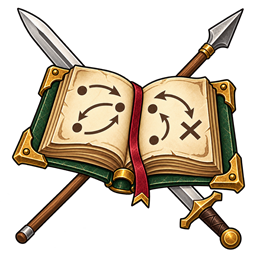
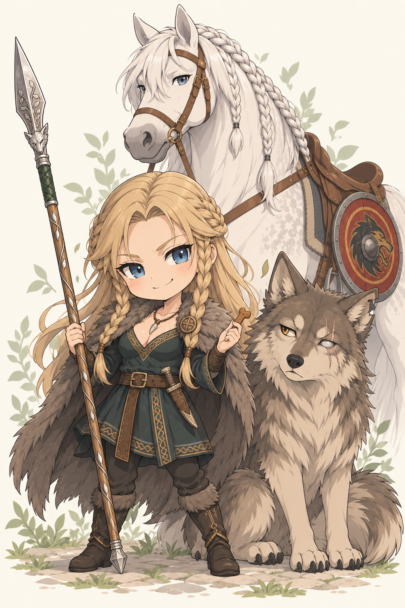

Ein günstiges Angriffsfenster?
Zwei Dornen und Kurzer Jagdstoß nutzen alle regulären Ressourcen ohne Besondere Aktion. Brechender Dorn ist eine teurere Spitze mit möglicher Entwaffnung.

DIE WELT VON ALERIAGameplay GuideSpeerführung zwischen Jagd und Grenzwacht
Ylva hält den Gegner mit Dornwacht auf Abstand und sucht die Öffnung für einen zweiten Stoß. Ihre Stärke liegt in präzisen Speerangriffen, einem großen TP-Vorrat und gezielter Kontrolle. Kurze Bonusangriffe ergänzen ihre Stöße; mehrteilige Angriffe, Entwaffnung und Abwehr konkurrieren um die Reaktion.

Bogenstand: 15. Oktober 2026 · Ohne temporäre Szeneneffekte. Aktuelle TP, Ressourcen und Zustände stehen im Charakterbogen.
Ihre persönliche Ausbildung erlaubt Geschicklichkeit für Speere und verbessert Bogen und Speer. Saex und Handaxt erhalten diese Ausbildungsboni nicht. Dieser Guide konzentriert sich auf Nahkampf; der Langbogen bleibt verstaut.
Zwei Dornen und Kurzer Jagdstoß nutzen alle regulären Ressourcen ohne Besondere Aktion. Brechender Dorn ist eine teurere Spitze mit möglicher Entwaffnung.
Speer am Wildpfad als günstige Grundlage. Durchschnaufen erst einsetzen, wenn ausreichend TP fehlen. Besondere Aktionen für entscheidende Momente behalten.
Schafthebel verbindet einen vollen Speertreffer mit Entwaffnung nach misslungener Rettung. Brechender Dorn bietet die stärkere, begrenzte Variante.
Aktion, Bonusaktion und Reaktion erneuern sich beim nächsten regulären eigenen Beitrag. Besondere Aktionen bilden einen begrenzten Vorrat mit eigener Erholung.
Eine Bonusaktion · einmal pro langer Rast · höchstens bis zum TP-Maximum · ohne KON-Bonus.
Wähle einen Eintrag für seine Vorschau. Persönliche Techniken, Kampfformen, Waffenangriffe und passive Fähigkeiten sind getrennt aufgeführt. Die Kampfpläne dieses Guides behandeln den Nahkampf; die Gesamtliste enthält auch vorhandene Fernkampfoptionen.
45 Einträge
Keine passenden Einträge. Ändere die Suche oder die Filter.
Charakterarsenal · ab Stufe 7
Aus der ruhenden Deckung schnellt Ylvas Speerspitze vor und kehrt sofort an ihre Seite zurück. (Leichter Angriff: 1W4 + halber positiver Schadensbonus, abgerundet. Kein zusätzlicher Effekt.)
Auswahl und Ausrüstung gelten für diese Vorschau. Kosten und Werte beziehen sich auf den dokumentierten Bogenstand; Waffenwechsel und Aufsteigen benötigen im Kampf ihre regulären Aktionen.
Die folgenden Abläufe passen bei verfügbaren Ressourcen in einen eigenen Beitrag. Treffer, Rettungswürfe und Reaktionen entscheiden über ihre tatsächliche Wirkung.
11 Kombinationen
Ylva setzt drei Angriffe und lässt den Handgriff zur Finte werden. (Je eigener Trefferwurf; 1W4, 1W8, 1W6 + Schadensbonus. Danach immer GES SG 18, auch bei drei Fehlschlägen.)
Nach misslungener Rettung bleibt die Reaktion des Ziels bis zum Beginn seines nächsten Beitrags gesperrt. Ylvas Vorteil gilt nur gegen dieses Ziel und endet am Ende ihres nächsten Beitrags. Er verstärkt keinen der bereits gewürfelten drei Schläge. Die Technik entzieht keine zusätzliche Bonusaktion.
Ylva folgt den beiden wechselnden Stoßlinien mit einem schnellen Abschluss. (Aktion + Reaktion + Bonusaktion; drei getrennte Trefferwürfe, keine Besondere Aktion.)
Gegen schwere Rüstung werden drei Schadensinstanzen getrennt gemindert. Der kurze Abschluss erhält nur den halben positiven Schadensbonus und keinen Ausbildungswürfel.
Ein geführter Stoß hält die Mitte, der schnelle Nachsatz nutzt die freie Öffnung. (Aktion + Bonusaktion; Reaktion und Besondere Aktionen bleiben erhalten.)
Durchschnaufen und ein bezahlter Waffenwechsel benötigen ebenfalls die Bonusaktion. Entscheide vor dem Nachsatz, ob Heilung oder ein Wechsel dringender ist.
Ylva prüft die Deckung mit dem ersten Stoß und setzt mit dem kräftigen Hebelangriff nach. (Aktion + Bonusaktion + Reaktion + 1 Besondere Aktion; Entwaffnungsrettung nur nach Treffer des Brechenden Dorns.)
Beansprucht alle regulären Ressourcen und einen begrenzten Vorrat. Keine zusätzliche Reaktionsabwehr im selben Beitrag; gegen eine leicht ersetzbare Waffe lohnt sich die Investition seltener.
Ylva schneidet in die Flanke, kehrt in Deckung zurück und führt einen engen Rückschnitt. (Aktion + Bonusaktion + Reaktion. Beide Techniken funktionieren mit Sax und Handaxt.)
Die passende Nebenwaffe muss bereits geführt werden. Sax verursacht den größeren Waffenwürfel; die Handaxt bietet bei Ylvas aktueller Ausrüstung einen besseren Trefferbonus.
Zwei getrennte Angriffe auf dasselbe Ziel. Trifft der erste, folgt GES SG 15: Nur bei Scheitern bekommt der unmittelbare zweite Angriff Vorteil und einen zusätzlichen Waffenwürfel. Nach einem verfehlten Auftakt folgt trotzdem ein normaler zweiter Angriff.
Die Bonusaktion bleibt frei. Die Reaktion ist bereits bezahlt; keine zusätzliche Speerabwehr im selben Beitrag.
Ein regulärer Speerangriff und bei Bedarf die einmalige Heilung. Die Reaktion bleibt für eine andere zulässige Option frei. Ohne fehlende TP lässt du Durchschnaufen weg.
Durchschnaufen steht einmal pro langer Rast zur Verfügung. Der Einsatz lohnt sich besonders, wenn die Heilung weitgehend ausgeschöpft werden kann.
Verbindet Schaden mit einer Störung des nächsten gegnerischen Waffenangriffs, falls dessen KRF-Rettungswurf misslingt. Sinnvoll gegen eine gefährliche nächste Antwort.
Der aktuelle Stellungseffekt gibt einmal −1 Angriff. Der alte Name bedeutet keine zusätzliche freie Bewegung oder dauerhafte Fesselung.
Persönlicher Speerangriff mit Waffenbasis, Ausbildungswürfel und vollem Schadensbonus. Nach Treffer entscheidet KRF SG 16 über die Entwaffnung. Die Waffe bleibt ein aufnehmbarer Szenengegenstand; eine gelungene Rettung verhindert nur den Zusatzeffekt.
Treffer und misslungener Rettungswurf sind nötig. Gegen Körperwaffen entsteht lediglich der beschriebene Angriffsmalus. Waffenwechsel oder Aufheben bleiben mögliche Antworten.
Ein günstiger Angriff, dann vorbereitete persönliche Abwehr: Der nächste eingehende Waffen- oder Technikangriff hat Nachteil. Die Bonusaktion bleibt frei.
Kostet nur die Reaktion, keine Besondere Aktion. Nur ein Angriff einer Folge wird erschwert; auch ein Fehlschlag verbraucht die Abwehr. Vor dem gegnerischen Wurf vorbereiten.
Ein Angriff zusammen mit +2 RK und 1W4 temporären TP. Gut, wenn mehrere gegnerische Angriffe zu erwarten sind und eine einmalige Ausweichwirkung nicht genügt.
Temporäre TP werden nicht addiert. Positive RK-Haltungen stapeln sich nicht; die stärkste zählt. Die Besondere Aktion fehlt später für den fallenden Dorn.


Die natürliche Hauptwaffe. Einhändig mehr Treffergenauigkeit; zweihändig W10 statt W8, dafür −1 Angriff. Bei hoher gegnerischer RK ist der größere Würfel nicht automatisch besser.
Reserven bei Entwaffnung und für die passenden Nebenwaffentechniken. Ein Wechsel kostet regulär eine Bonusaktion. Eine am Gürtel getragene Waffe liefert keinen kostenlosen Zweitangriff.
Der Schutz gegen Hieb und Stich gilt je Schadensinstanz. Giftwiderstand im Rettungswurf ist nützlich, hilft aber nicht gegen jede beliebige Zustandswirkung.
Ohne Begleiter trägt die Figur Angriff und Abwehr allein. Mit einem aktiven Tier kommen dessen eigene Handlungen, Ressourcen und Verwundbarkeit hinzu.
Allein hält Ylva ihre Ressourcen für Angriff und Deckung zusammen. Mit Freki kann sie denselben Gegner unter Druck setzen, während er mit seinen eigenen Aktionen handelt. Seine Anwesenheit gibt ihr weder pauschalen Vorteil noch kostenlose Bisse.
Aggressiv: Frekis Wuchtiger Jagdsprung nutzt eine Besondere Aktion für stärkeren Schaden; Schneller Fang ist sein leichter Bonusangriff. Kontrolliert: Fesselbiss stört nach misslungenem Rettungswurf den nächsten Angriff des Ziels. Nur die ausgewiesene Wirkung anwenden.
Ausdauer: Seine defensiven Selbstfähigkeiten kosten seine eigenen Ressourcen. Sein TP-Vorrat ist kleiner als Ylvas; ein angeschlagener Wolf sollte nicht aus Prinzip jede Gegenattacke abfangen. Flankenlauf ist keine automatische Umzingelungsregel.
Ein kurzer Schnapper: Bisswürfel, höchstens W4, plus halbe positive feste Schadensboni. Kein Ausbildungswürfel.
Normaler Biss plus ein Biss-Zusatzwürfel (höchstens W6) und erreichter Ausbildungswürfel. Nach Treffer KRF-Rettungswurf gegen SG 12; Keine vollständige Fesselung. Der nächste eigene Waffen-/Technikangriff erhält −1 Angriff; auch ein Fehlschlag verbraucht den Malus. Verfällt spätestens am Ende des nächsten eigenen Beitrags.
Ein kraftvoller Biss: normaler Biss plus ein weiterer Bisswürfel und erreichter Ausbildungswürfel. Kein automatisches Umwerfen, kein zweiter Angriff und keine zusätzliche Bewegung.
Keine freie Bewegung und kein automatisches Entkommen aus einer Bindung. Der nächste gegnerische Waffen-/Technikangriff gegen die Figur erhält −1 Angriff; auch ein Fehlschlag verbraucht den Schutz. Verfällt spätestens am Ende des nächsten eigenen Beitrags.
+2 RK für einen eigenen Beitrag. Muss vor einem späteren Angriff eingesetzt werden; verändert keine bereits ausgewerteten Treffer.
Freki erhält 1W6 + KON temporäre TP. Ein vorhandener höherer Vorrat bleibt bestehen; keine Heilung und kein Wiederbeleben.
Silberkrone ist Ylvas Reittier. Vor Kampfbeginn kannst du sie als Startaufstellung wählen; späteres Auf- oder Absitzen verbraucht eine Bonusaktion. Auf dem Bogen bleibt Ylva Skytte: Ein Sattel verleiht ihr keine Uchelwyr-Techniken.
Reiten kann in einer passenden Szene die Positionierung ermöglichen. Bewegung und Reichweite müssen tatsächlich passen; ein Pferd erzeugt keinen kostenlosen Angriff und keine automatische Flucht. Ein eigener Hufschlag benötigt das Ross als aktiven Szenenteilnehmer und seine eigene Aktion.
Der Schild am Sattel gehört zum Bild und Gepäck. Ylva führt keinen Schild und erhält dadurch keinen RK-Bonus. In engen Innenräumen ist ein Kampf zu Fuß häufig die praktikablere Aufstellung.
Kritische Treffer: Der normale Schadenswürfelpool zählt maximal; ein gleicher weiterer Pool wird gewürfelt. Feste Boni zählen einmal. Aus 1W8+3 werden 8+1W8+3. Jede Angriffsinstanz prüft ihren Krit getrennt; Rüstung und Resistenzen greifen anschließend. Heilung, Eigenschaden und automatische Wirkungen erhalten keinen Kritaufschlag.
Entwaffnete Waffen werden zu Szenengegenständen. Aufheben und Ausrüstungswechsel kosten die regulären Aktionen. Temporäre Wirkungen enden nach ihrer Dauer oder ihrem einmaligen Auslöser.
Ylva funktioniert mit einem klaren Wechsel zwischen verlässlichen Einzelangriffen und gezielten Spitzen. Ihre neuen Bonus- und Reaktionsangriffe erlauben mehrere Treffer pro Beitrag. Die Dreierfolge erzwingt die Rettung gegen den Feger, bindet dafür aber alle regulären Ressourcen. Gegen hohe Rüstung sind wenige kräftige Treffer häufig wertvoller als viele kleine.
Zurück nach oben ↑